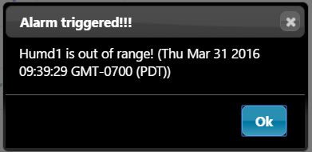
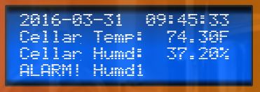
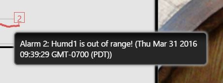
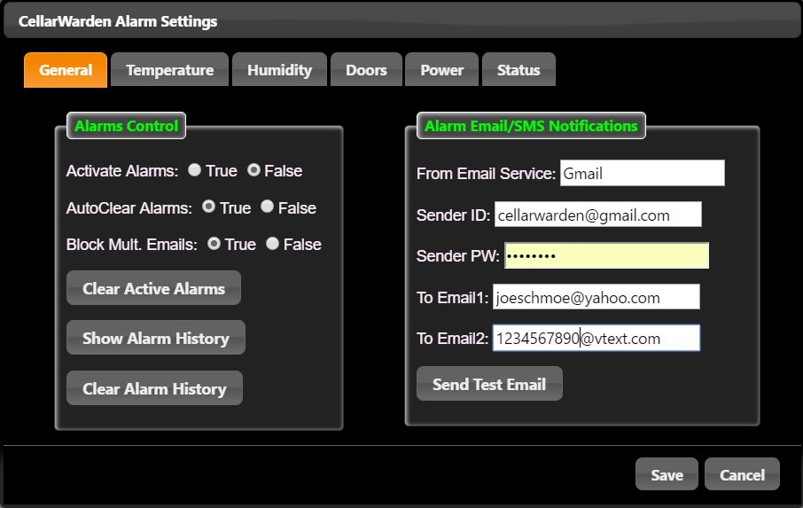
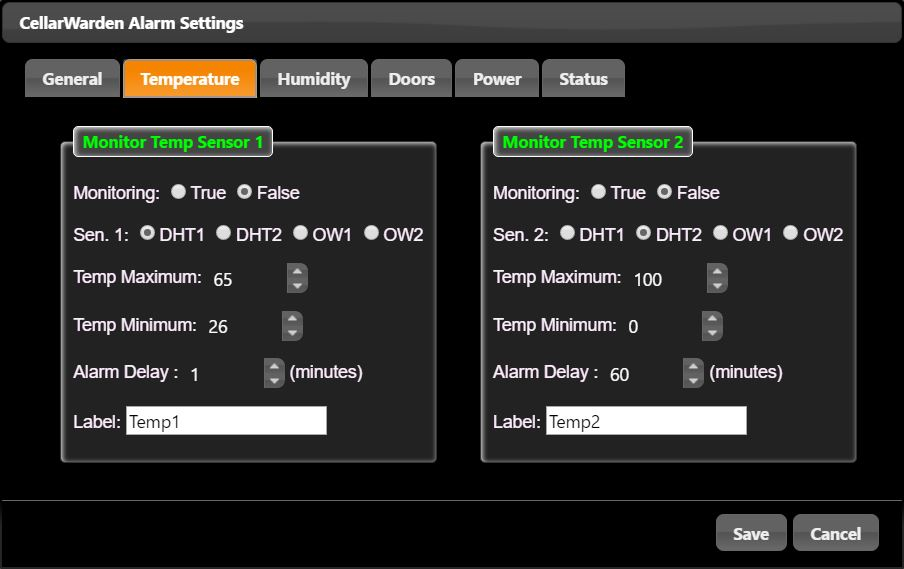
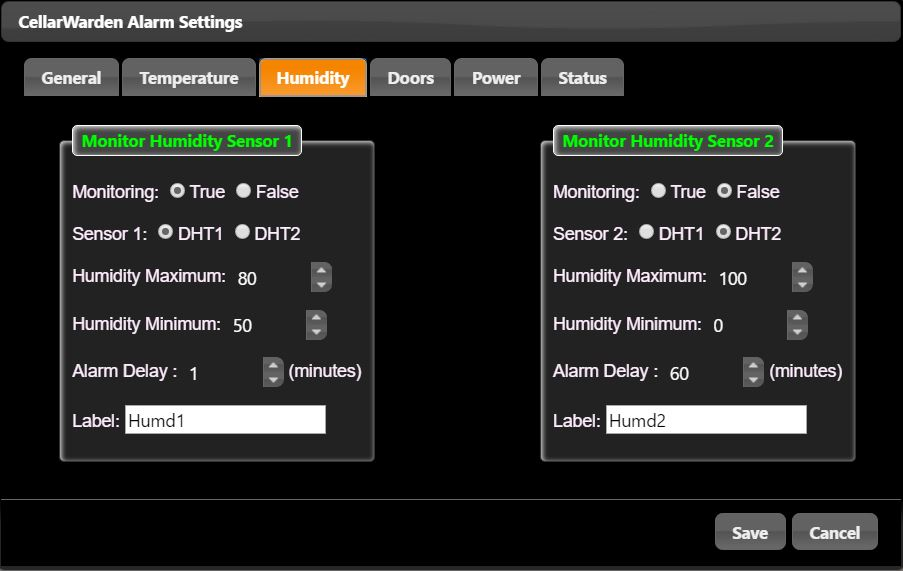
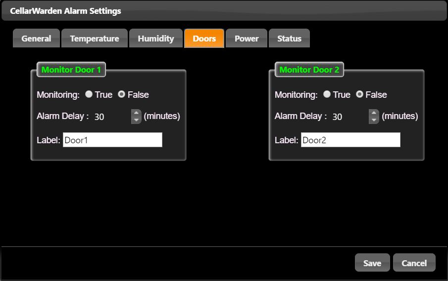

CellarWarden provides a means for monitoring its operations and can be set up to send alarm notifications if a specified sensor is outside of its normal working range. These alarm notifications are sent to specified email addresses and can trigger SMS/text messages to be sent via a cell phone.
Alarm Notification
If an alarm is triggered while the CellarWarden client app is open, a notification will pop up...

This will also be apparent in the LCD display on the last row...

If one or more email addresses are set up in the Alarms Dialog, email messages and/or SMS/text messages will be sent to indicate the alarm condition.
In addition, the sensor that triggered the alarm will be indicated on the graph in the Sensors tab when the mouse pointer hovers over the annotation box (labeled "2" in the example below)...

The Alarms configuration may be set up by clicking the Alarms button on CellarWarden's banner.
General
This tab encompasses general features of the Alarms function...

Alarms Control
Activate Alarms: Select this control as True when monitoring is desired.
AutoClear Alarms: Select this control as True when it is desired to automatically clear triggered alarms so that the alarm is not retriggered when the alarm condition has not been rectified. When true, the Activate Alarms control will be set to false to prevent additional alarm notifications.
Block Mult. Emails Select this control as True to prevent the sending of multiple email and/or text/SMS messages.
Clear Active Alarms: Click this button after an alarm has been triggered. This will turn off the client notification and return the LCD display operation to normal.
Show Alarm History: Click this button to show a list of previously triggered alarms.
Clear Alarm History: Click this button to delete previously triggered alarms from the Alarm History. This will also remove any alarms annotations from the sensors graph.
Alarm Email/SMS Notificatons
From Email Service: Name of the service provider for an email account that serves as the sender.
Sender: Address of an email account that serves as the sender. It is suggested that a new account devoted to CellarWarden be set up using a free email service such as Gmail or Yahoo.
Sender PW: Password for the sender email account.
To Email1/Email2: Addresses for email accounts that serve as receivers of alarms notifications. Each field can receive more than one email address by separating the different email addresses with commas. To send SMS/text messages, use your email provider's email address that will result in the transmission of an SMS/text message. For example, to send to a Verizon phone, use the format 1234567890@vtext.com, where the numbers in front represent the area code and phone number of that account. More information about sending SMS/text messages by email are provided here.
Send Test Email: Click this button to send a test email notification to each email address listed in the above two fields. It is imporant to verify that alarm notifications will be sent properly.
This tab is used to configure alarm conditions for temperature probes...

Currently, two temperature probes may be monitored although future versions will include the ability to monitor additional temperature sensors.
Monitoring: Click on True to monitor this sensor.
Sen. 1/Sen. 2: Select the temperature sensor from one of the two DHT-type sensors, or one of two 1-wire sensors (onew1, "OW1"; onew2, "OW2").
Temp Maximum/Temp Minimum: Use these controls to enter a temperature range between minimum and maximum values for this sensor. If the sensor returns a value outside of this range, an alarm event will be triggered and the user notified.
Alarm Delay: An alarm will trigger after the alarm condition has been met for this delay. This prevents an alarm from being triggered spuriously, e.g. by a temporary increase in temperature due to opening a door.
Label: Provide a short name for this sensor to use in alarm notifications.
Humidity

Monitoring: Click on True to monitor this sensor.
Sensor 1/Sensor2: Select from DHT1 or DHT2.
Humidity Minimum/Maximum: Set a range for humidity for this condition.
Alarm Delay: As above.
Label: Provide a short name for this sensor to use in alarm notifications.
Doors

Monitoring: Click on True to monitor this door sensor.
Alarm Delay: If the door is left open for a period longer than this value, an alarm will be triggered.
Label: Provide a short name for this door sensor to use in alarm notifications.
Power and Status
These tabs are currently non-functional but will be added in future updates of CellarWarden.
Save
Click this button to save all changes in the Alarms dialog.
Cancel
Click this button to cancel any changes and close the Alarms dialog.